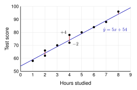

A line of best fit makes predictions. Most real points are a little above or below the line.
A residual measures how far off the prediction is.
residual actual
predicted
Positive residual: the point is
above the line. Negative residual: the point is
below the line.

Example: The line is . Two students studied 4 hours.
| (actual) | (predicted) | | Meaning |
|---|
| 4 | 78 | | | scored 4 points more than predicted |
| 4 | 72 | 74 | | scored 2 points less than predicted |
The least-squares line. Square every residual and add them: .
The least-squares regression line is the line that makes this sum as small as possible.
Calculators and computers find this line for you.
Residual plots. Put across the bottom and the residuals up the side.
| A: random scatter, no pattern. | A line is a good model. |
| B: a curved pattern. | A line is not a good model. The data is curved. |
4.3 Residuals - PracticeName
Work with a partner. Compare answers when you finish each problem.
1. A plant's height (cm) is predicted by
, where
is the number of weeks. Fill in the table.
| (weeks) | (actual) | (predicted) | residual |
|---|
| 1 | 6.8 | | |
| 2 | 8.6 | | |
| 3 | 11.8 | | |
| 4 | 13.6 | | |
| 5 | 16.9 | | |
- Which weeks have points above the line?
- Is the point for week 2 above or below the line? How do you know?
2. Use the study line
.
- A student studied 6 hours and scored 90. Find the residual.
- Another student has a residual of . What does that mean?
3. The used car line is
(value in thousands of dollars). A 6-year-old car is worth $14,000. Find the residual and explain it.
4. Two lines were fit to the same 4 points. Here are their residuals.
| Residuals | |
|---|
| Line A | 2 | | | 0 | |
| Line B | 3 | | 1 | | |
- Find for each line. (Square each residual, then add.)
- Which line is closer to the least-squares line? Explain.
5. Look at the residual plots on page 1.
- Which plot shows that a line is a good model?
- What does the pattern in plot B tell you?
6. A residual plot has positive residuals for small
, negative residuals in the middle, and positive residuals for large
. Is a line a good model? Explain.